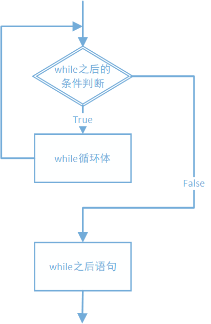

4.3 while循环
循环是什么？
根据一个条件是否满足，反复的执行一段代码或者结束反复执行。
例如：计算1+2+3+。。。+100，每次将一个数字加到和中，将这个动作循环100次，就能够得到结果。
除了这样固定要循环多少次的情况之外，还有一些操作次数不定，需要使用循环反复的进行，直到条件满足，循环结束，得到结果。
在Python中循环可以用while语句或者for语句实现。
while循环
while循环的写法：
while 循环条件:
循环体
循环条件跟在while后面，然后是缩进的循环体。条件为真时，循环体执行，当循环体执行完毕（称为执行了一次循环），回到while的循环条件判断，如果为真，则继续执行循环体；如果某一次循环条件的判断为假时，循环结束，将跳到循环后面的语句继续执行。
流程图如下：

循环有如下基本要素：
- 循环条件
- 循环体
循环条件又可以细化为：
- 循环初值：设置一个循环控制变量，并赋一个初始值。循环控制变量负责控制循环执行多少次。
- 判断条件：循环是否继续执行的条件，一般循环控制变量参与循环的条件判断。
- 循环终值：循环变量最终达到终值，循环结束，一般放在判断条件中。
循环体是循环反复执行的操作，为了实现循环有限次数的进行，需要在其中加入循环控制变量自增或自减的语句，使之趋向于循环终值，并最终达到终值，结束循环。如果缺少，循环可能会无限执行下去，造成死循环。
例如：4.5-while循环.py
# 循环控制变量赋初值
i = 1
# 循环条件+循环终值
while i <= 5:
# 循环体，包括循环控制变量自增
print('第{}次循环'.format(i))
i += 1
执行结果为：
第1次循环
第2次循环
第3次循环
第4次循环
第5次循环
while循环一般应用于循环次数确定的循环。循环次数通过循环控制变量在循环条件中控制。
在解决实际问题中，通过对问题的分析，得到循环的条件和需要反复执行的循环体，然后使用while循环实现。
例如：求1到100的整数求和。
分析：用一个变量存储结果的和，每一次将一个数字加到和中，重复这个操作100次，每次加上的数字加上1，即1，2，3。。。
这其中的循环初值为1，代表第一个加上的数字；循环条件为不大于100；循环终值为100；循环体就是将1，2，3等数字加到存储和值的变量中。
于是可以编写代码如下：4.6-while求和.py
# while 1-100求和
sum = 0
i = 1
while i <= 100:
sum = sum + i
i += 1
print('sum={}'.format(sum))
执行结果为：
sum=5050